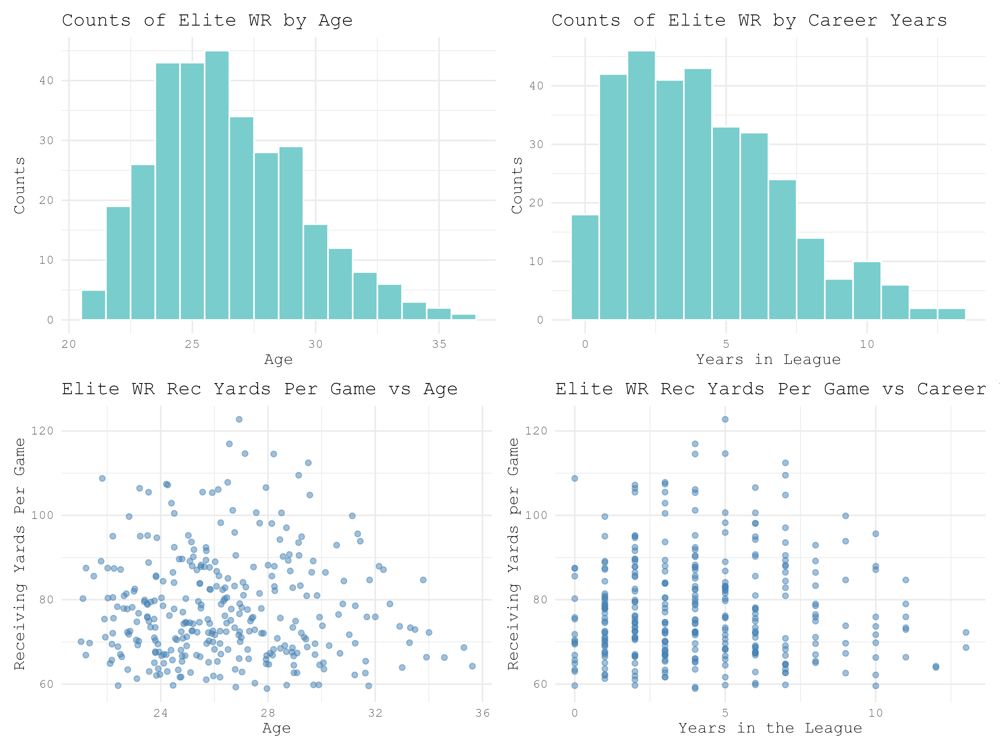
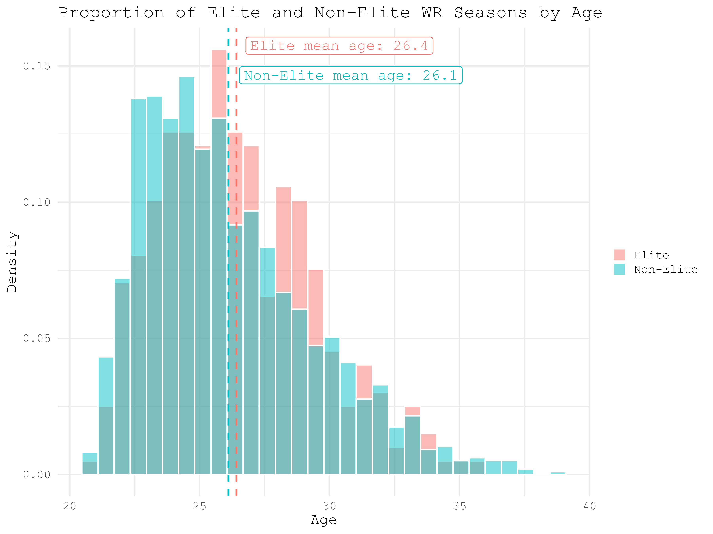
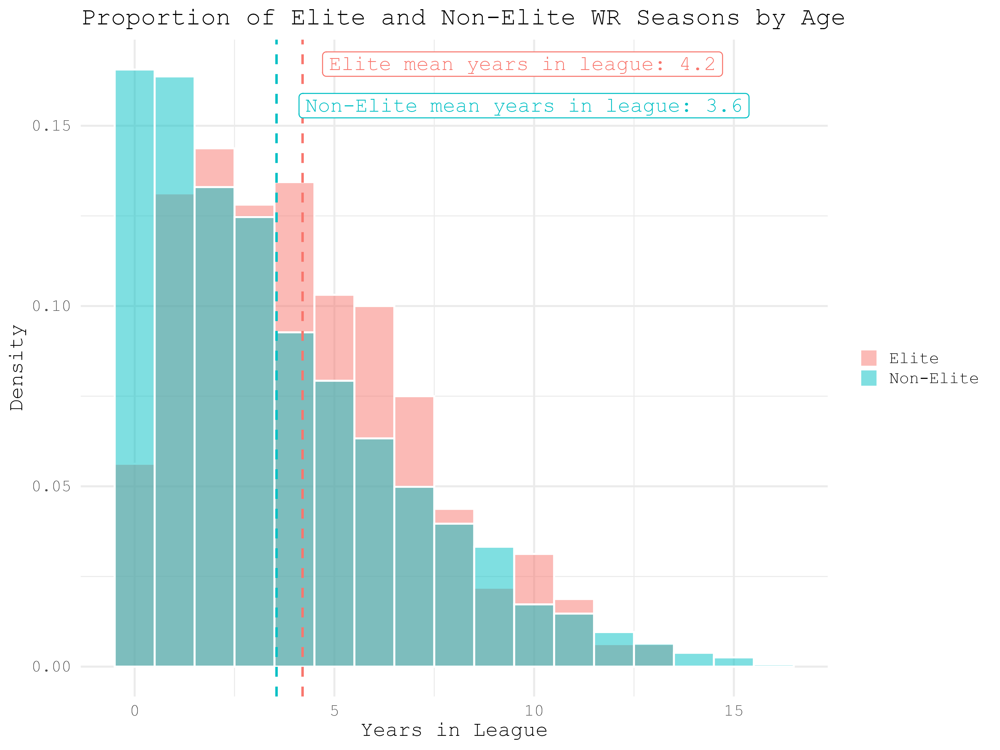
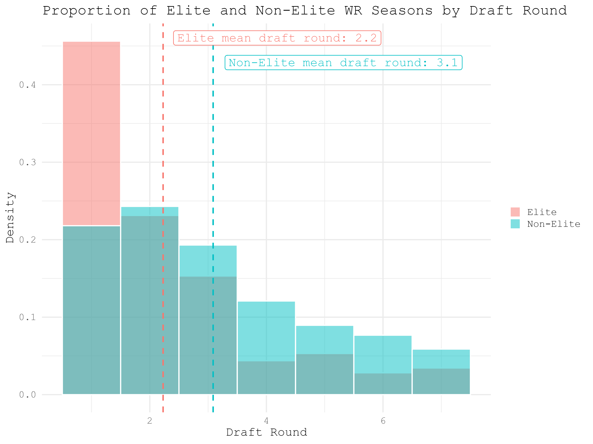
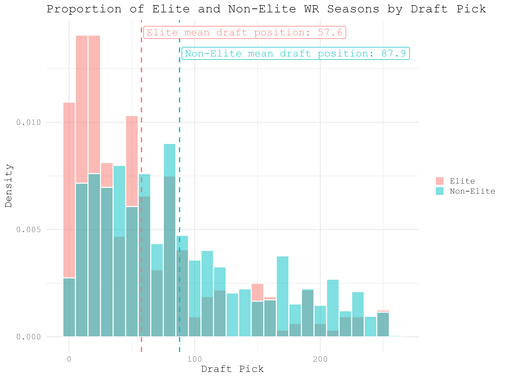

General Elite Stats
Below are some plots that show elite WR counts by age and years in the league. Then yards per game by age and years in the leauge. Ages of elite WRs peak in the mid-20s, and at about 4 years in the NFL.
This is just get a overall look at the population of what we're considering "elite" WRs.
This is just get a overall look at the population of what we're considering "elite" WRs.

Elite vs Non-Elite
I've separated elite (1000 yards and/or 100 catches in a season) and non-elite WR seasons and compared them to each other based on age, years spent in the NFL (up to that season), draft pick, and draft round. Below are the counts of the two groups for each of those stats with their means labeled.




Of these 4 stats, the difference is mean is significant from a Welch's T-test (p < .05) for years in the league, draft, pick, and draft round. Age is not signifcant at a p < .05 level. None of this is particularly suprising, NFL experience is certainly more valuable than just the age of a player, and it's expected that higher draft picks tend to have more high-production seasons than lower draft-picks.